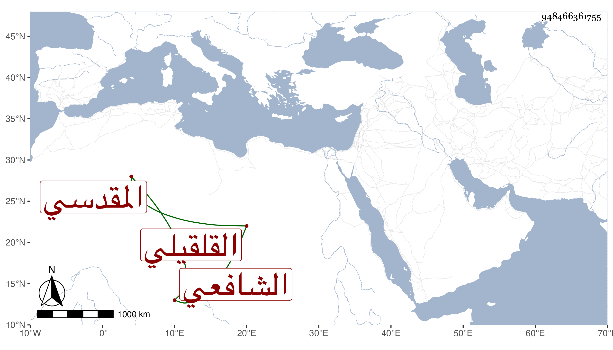

0902Sakhawi.DawLamic.ITO20230111-ara1.EIS1600.948466361755
Biography ID: 948466361755
213
أحمد بن محمد بن أحمد بن إبراهيم بن مفلح الشهاب بن الشمس القلقيلي الأصل المقدسي الشافعي الآتي أبوه وابنه النجم محمد . كان صيتا حسن الصوت ناظما ناثرا كاتبا مجموعا حسنا . مات فجأة في ثامن عشري شعبان سنة تسع وأربعين في حياة أبيه وتأسف أبوه على فقده بحيث كان كثيرا ما ينشد :
| شيئان لو بكت الدماء عليهما | عيناي حتى تؤذنا بذهاب |
| لم يبلغ المعشار من عشريهما | فقد الشباب وفرقة الأحباب |
ومن نظم صاحب الترجمة يخاطب شهاب الدين موقع جانبك :
| يا شهابا رقي العلى | لا تخن قط صاحبك |
| زادك الله رفعة | ورعى الله جانبك |
